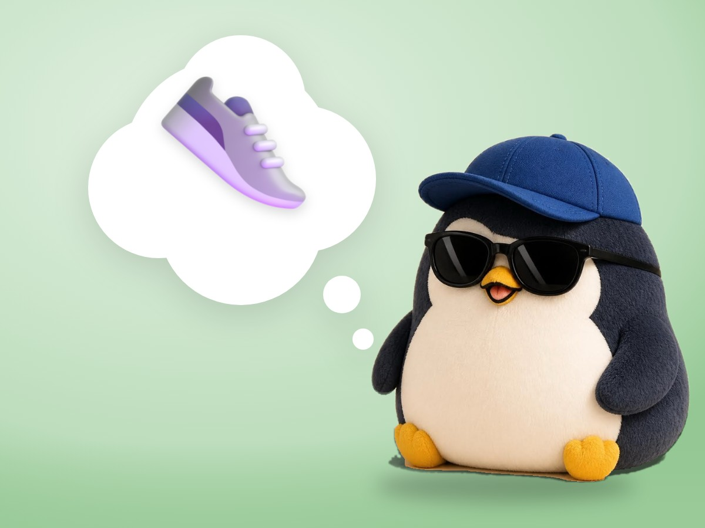

📝 DRAFT · 下書き — まだ本番に出していません · 下書き一覧
🐧 EVERYDAY LIFE⚡ 17 SEC
Moving first is easier than changing your mind first 👣

Waiting Room
If you wait until your worry is gone, you can never move.
Move First
Oliver Burkeman says that moving and then changing your mind is easier than changing your mind and then moving.
⚡ TRY IT
Think first, or move first?
Worry
💪 Courage
🔄 Thinking loops: 0
✓ I can handle it
✓ I can handle it
✓ I can handle it
✓ I can handle it
✓ I can handle it
Your worry is here. What will you do?
Hmm… a little braver… no, back again. 🔄
The thinking goes round and round. Still not brave. 🔄
One step! The worry is still here, but you moved. ✓
Another piece of proof: "I can handle it." ✓
🚩 You made it! The worry is still here, and that is OK. 🎉
Proof Grows
Each small step adds one piece of proof: "I can handle it."
Worry Can Stay
It is OK if the worry is still there.
📚 I learned this from Oliver Burkeman's newsletter. Read the original (English)